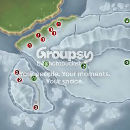

มันอยู่ตรงไหนของเมืองเหนือหรอค่ะ

ถ้าจะให้ดีขอรูปเมพด้วยค่ะอิอิ

http://eco.froztic.in.th/archive/ecofanclub/
http://eco.froztic.in.th/archive/ecofanclub/viewtopic.php?f=15&t=14522

Charon เขียน:อยู่ใน Hiding Room อ่ะครับ ทางเข้าทางเดียวกับ Missionary Room (ห้อง รี สกิล / รี สเตตัสฟรี)
ปล.อย่าลืมเอาดอกไม้ไปด้วย 1 ดอก


-คนหน้าตาดี- เขียน:
North Endless
3D Isomatric View
3D Bird Eye View
Monster : Pulun / Cyclop / Dark Feather / Skeleton Archer / Pepen / Angel Feather / Vilido / Magician
Material : Wood Box 4 / Treasure 4
Weather : Cold - HP ลดทีละ 1 หน่วยทุกๆ 3 วินาที
Attribute : Water / Light
NPC
1 Northern People
2 Icy Master [ทำ Marionette Icy] [เควส Nekomata Anzu]
3 Icy
Warp
1 Icy Island
2 Evan , Frozen Goldo [เควสเปลี่ยนอาชีพ Trader]
3 Middle North Mountain
4 Middle North Mountain